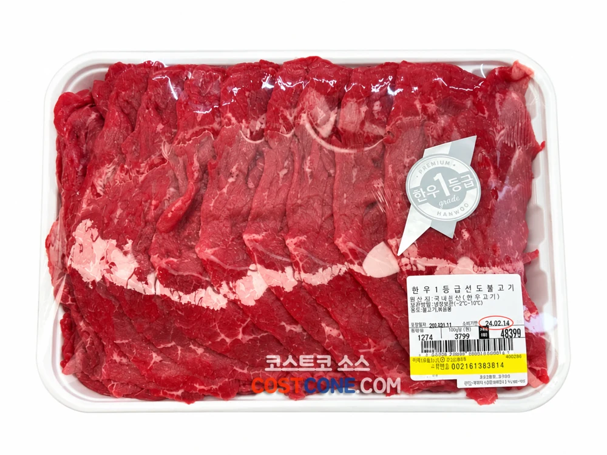

01양념 없이 고기만
한우 1등급 설도 불고기용
국내산 · 설도 · 냉장 생고기 · 상품번호 560228
100g당 4,799원
매장 가격
1kg당 47,990원 · 팩별 중량에 따라 총액이 달라집니다
고기만 준비된 불고기용 한우, 양념은 내 취향대로.
- 국내산 1등급 한우 설도를 불고기용으로 손질
- 양념이 없어 간과 단맛을 직접 조절 가능
- 불고기·채소볶음 등 다양한 요리에 활용
이렇게 즐겨요
간장·마늘·양파 등으로 직접 양념해 충분히 익혀 드세요. 구입 후 먹을 분량씩 나눠 보관하면 편해요.